Field guides with receipts
Go where the people who know would go.
8,458 places across 84 guides in 6 countries — each recommended by named sources, pinned to the door and checked open.
United States21 guides · 4,144 places
-
Cleveland
194 places Polish Boycorned beefHaserot Angel -
Youngstown
62 places Brier HillpizzaPast Times Arcade -
Pittsburgh
212 places pierogifish sandwichPoint State Park -
New York City
508 places slicebagelEmpire State Building -
Silicon Valley
152 places Apple Park Visitor CenterThe Tech InteractiveBack A Yard Caribbean Grill -
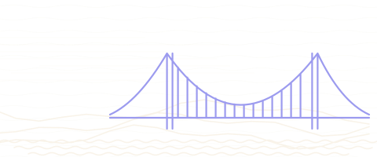
San Francisco
396 places sourdoughMission burritoGolden Gate Bridge -
Cincinnati
109 places chiligoettaCincinnati Museum Center at Union Terminal -
Columbus
86 places Columbus-stylepizzaOhio Theatre -
Dayton
74 places Dayton-stylepizzaFrank Lloyd Wright's Westcott House -
Washington DC
134 places half-smokecrabLincoln Memorial -
State College
48 places Horseshoe Curve National Historic LandmarkAltoona Railroaders Memorial MuseumPenn State Berkey Creamery -
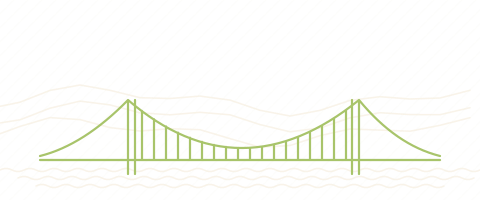
Wheeling
35 places Wheeling Suspension BridgeWest Virginia Independence HallFigaretti's Restaurant -
Erie
59 places Greek saucesponge candySchaefer's Auto Art -
Chicago
367 places deep-dishItalian beefPalmisano Park -
Miami
325 places Cuban sandwichcroquetaCoral Castle -
Orlando
387 places gatorCharles Hosmer Morse Museum of American ArtTinker Field History Plaza -
Indianapolis
156 places tenderloinsugar cream pieSoldiers' and Sailors' Monument -
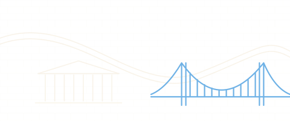
Philadelphia
363 places cheesesteakroast porkIndependence Hall -
Akron · Kent · Canton
150 places Barberton chickenStan Hywet Hall & GardensMassillon Museum -
Harrisburg · York · Lancaster
171 places shooflywhoopie piePennsylvania State Capitol -
Madison
156 places cheese curdsfish fryWisconsin State Capitol
Collections across the guides10 collections · counts from the guides
- 115Anime pilgrimageReal streets and shrines from the manga and screen canon · across Japan Tokyo 36Hokkaido 28Osaka 24Okinawa 18+1 more guide
- 148The hawker canonStalls the city argues about, town by town · across 2 countries Newton & Novena 22Upper Serangoon 21Holland Village 19Punggol 18+15 more guides
- 420Temples & shrinesFrom Kyoto’s great halls to neighbourhood shrines · across 3 countries Kyoto 158Tokyo 79Ho Chi Minh City 52Osaka 42+17 more guides
- 89Ramen countersBowls named by the people who queue for them · across Japan Hokkaido 33Tokyo 33Kyoto 13Osaka 9+1 more guide
- 336Michelin & fine diningStarred and bib-gourmand tables, each with its source · across 4 countries Liège 58Kyoto 52Tokyo 52Osaka 34+10 more guides
- 137World HeritageUNESCO-listed sites, pinned to the door · across 3 countries Okinawa 29Kyoto 26Saarbrücken 26Brussels 12+9 more guides
- 53Onsen & sentōHot springs and neighbourhood bathhouses · across Japan Hokkaido 29Tokyo 12Kyoto 5Osaka 5+1 more guide
- 93Beer halls & brewersTrappist taps, Kölsch and the brown cafés that pour them · across 2 countries The Rhineland 23Antwerp 17Brussels 15Bruges 10+4 more guides
- 30Frank Lloyd WrightPrairie School houses and the buildings that made him · across United States Chicago 21Madison 9
- 1,217Free to visitMuseums, parks and landmarks that cost nothing · across 6 countries Tokyo 125Okinawa 108Saarbrücken 87Hokkaido 82+36 more guides
Singapore29 guides · 598 places
All SingaporeThe city-state, town by town — hawker food and landmarks, opening on Toa Payoh.
-

Toa Payoh
55 places chicken riceHokkien meeToa Payoh Dragon Playground -

Bishan
43 places chicken ricechar kway teowKong Meng San Phor Kark See Monastery -

Ang Mo Kio
87 places chicken ricelaksaBishan-Ang Mo Kio Park -

Potong Pasir & MacPherson
60 places chicken ricelaksaPotong Pasir Sloping-Roof HDB -

Upper Serangoon
99 places chicken ricelaksaHougang Tou Mu Kung -

Punggol
48 places laksabak chor meeConey Island Park -

Newton & Novena
42 places chicken riceHokkien meeNewton Food Centre -

Balestier
49 places chicken ricelaksaGoh Chor Tua Pek Kong Temple -

Holland Village
33 places chicken ricechar kway teowGhim Moh Market & Food Centre
More in Singapore
- Bedok1 place
- Bukit Timah3 places
- Changi2 places
- Chinatown & CBD16 places
- Civic District6 places
- Dempsey Hill2 places
- Geylang2 places
- Jalan Besar & Lavender6 places
- Jurong3 places
- Kampong Glam3 places
- Katong & Joo Chiat7 places
- Little India5 places
- Mandai3 places
- Marina Bay6 places
- Marine Parade & East Coast2 places
- Old Airport Road4 places
- Queenstown & Redhill4 places
- Southern Ridges2 places
- Tiong Bahru3 places
- Upper Thomson & MacRitchie2 places
Vietnam5 guides · 183 places
All VietnamHo Chi Minh City, district by district and out to the Mekong, Củ Chi, Tây Ninh and Vũng Tàu corridors.
More in Vietnam
Germany3 guides · 751 places
All GermanyThree cross-border/regional maps — Saarbrücken & the SaarLorLux Greater Region, Aachen & the Dreiländereck (Eifel, Maastricht, Ostbelgien), and the Rhineland (Cologne, Bonn & Düsseldorf).


Belgium5 guides · 651 places
All BelgiumFive city maps — Antwerp, Ghent, Brussels, Bruges and Liège (Wallonia), each with its surrounding area, beer & breweries front and centre. All five live.
-
Antwerp
137 places friteschocolateOnze-Lieve-Vrouwekathedraal -
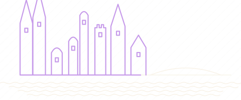
Ghent
108 places friteschocolateSint-Baafskathedraal -
Brussels
139 places wafflefritesGrand-Place / Grote Markt -
Bruges
123 places chocolatetrappistMarkt -
Liège
144 places gaufrebouletsPalais des Princes-Évêques
Japan5 guides · 2,092 places
All JapanFive maps — Tokyo ward by ward, Kyoto, Osaka, Okinawa and Hokkaido — each driven to New York density.
-
東京Tokyo
488 places Edomae sushisobaEdo-Tokyo MuseumAnime, Manga & Pop Culture · 37 -
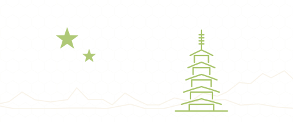
京都Kyoto
398 places kaisekiyudofuNishiki MarketAnime, Manga & Pop Culture · 9 -
大阪Osaka
369 places takoyakiokonomiyakiSuper Nintendo WorldAnime, Manga & Pop Culture · 24 -
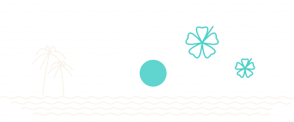
沖縄Okinawa
425 places Okinawa sobagoyaShikinaen Royal GardenAnime, Manga & Pop Culture · 18 -
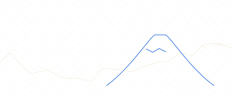
北海道Hokkaido
412 places jingisukanuniGoryōkakuAnime, Manga & Pop Culture · 28
Why trust a Cleo pick
Every place shows who recommends it. A place needs two credible sources — or one Michelin or James Beard nod. Review sites never count as the recommender.
Each pin is checked against an official site, a map provider's place pin or Wikipedia's coordinates, with its source and date kept.
Every place's status is checked against a real source. A closed place stays on the page, flagged, so you never go to a shuttered door.
Looking for the rest of Southeast Asia? Southeast Asia preview (archived index)
68 guides in live countries.